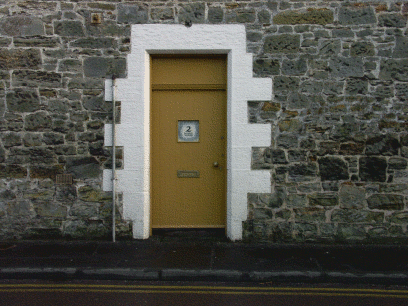
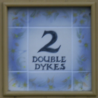
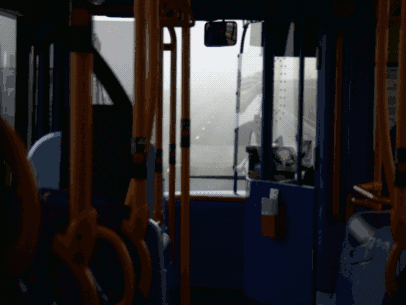
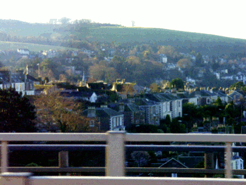
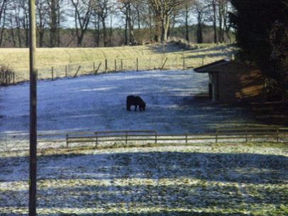
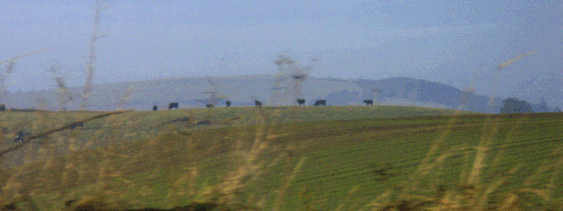
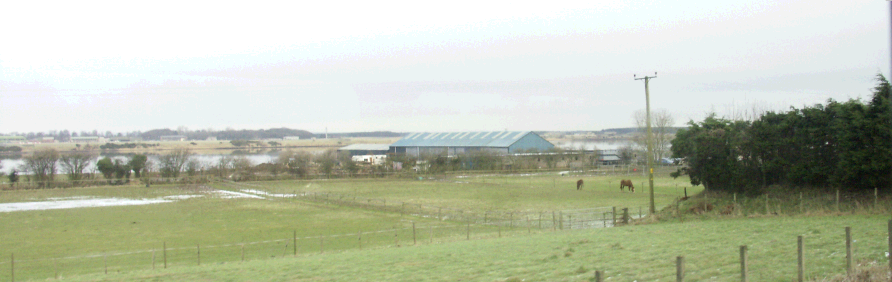

Schottland-Fotos

lustige Hausnummer...

Yes!!! Two Doubledykes!!!!

Mist on Tay Road bridge

Das malerische Städtchen Tayport

Ich hoffe, das Pferd hat's schön warm dort, aber ich fürchte nicht!

Das Bild hat sich so schlecht komprimieren lassen, weil man sonst die vielen Büffel nicht mehr sieht.

Wo die Leute einigermaßen gut situiert sind, sind auch die Pferde nicht weit.

Ausblick aus dem Labor. Das Golfhotel kommt weder in zeitlicher noch finanzieller Hinsicht in Betracht.